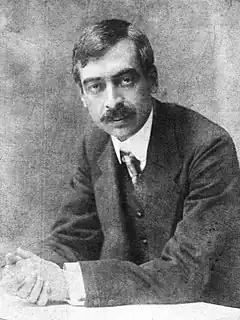

Пейо Яворов (болг. Пейо Яворов, 1 січня 1877 — 16 жовтня 1914) — болгарський поет-символіст та революціонер.
Походив з родини дрібного торговця. Народився у м.Чипран 1877 року. З 1891 до 1893 року навчався у гімназії Пловдива. У 1892—1898 роках був близький до соціалістичного руху. З 1897 до 1900 року працював телеграфістом у Чипрані, Старій Загорі, Слівені, Стралджі, Анхіало, Софії. У 1897 році вступає у контакт з Внутрішньою македоно-адріанопольською революційною організацією.
З 1901 до 1902 року редагував газету "Справа". Після придушення селянських повстань 1901 року і Ільінденського повстання 1903 року, в підготовці якого він брав участь, Яворов зневірився в громадських ідеалах. У 1902 році обирається делегатом 10-го Македонського конгресу. У 1903—1904 роках брав участь у русі приєднання Македонії до Болгарії. У 1904 році стає членом редколегії журналу "Думка". Протягом 1905 року перебував у Франції (Нансі, Парижі), Швейцарії (Женеві), Австро-Угорщині (Відні). 1912 року брав участь як волонтер у Першій Балканській війні. Він був нагороджений Хрестом "За хоробрість". Після закінчення війни став мером міста Неврокоп, а згодом оженився на доньці Петко Каравелова. Загибель у 1913 році дружини призвела до депресії. Зрештою у 1914 році Яворов прийняв отруту, а потім застрелився. Популярність принесли вірші "На ниві", "Град". У його поезії з початку 1900-х років звучать мотиви песимізму, самотності. У дусі символізму створено збірку "Безсоння" (1907). Проте його творчість багато в чому зберігала гуманістичне спрямування. Твори позначені високою трагедійною лірикою, скорботою за нездійсненими ідеалами, важким почуттям безвиході, душевним болем людини — "Ніч", "В годину синьої імли", "Знемога душі". Він також автор художньої біографії керівника національно-визвольного руху в Македонії Г. Делчева. До того ж написав спогади про свою участь у цьому русі — "Гайдуцькі мрії", (1908). Широтою соціальної проблематики вирізняються його п'єси "Біля підніжжя Вітоши" (1911) і "Як завмирає відлуння після грому" (1912).